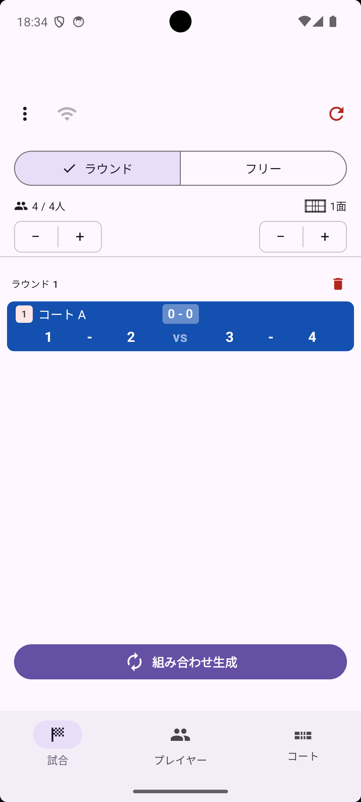
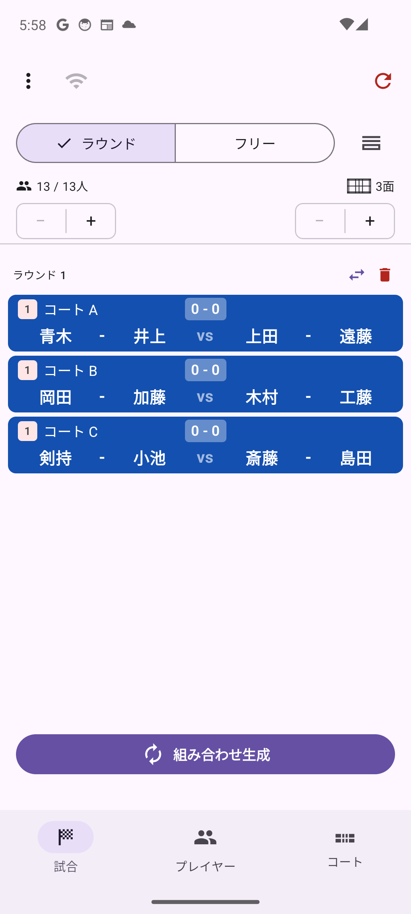
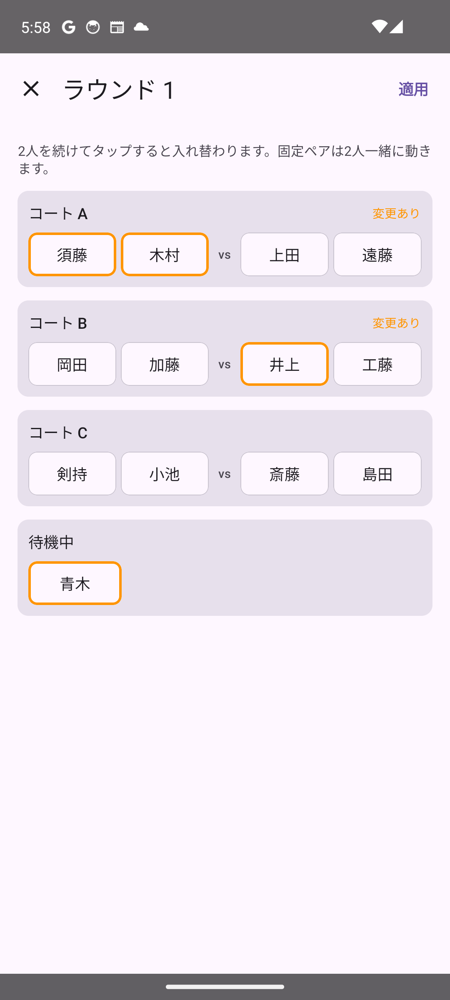
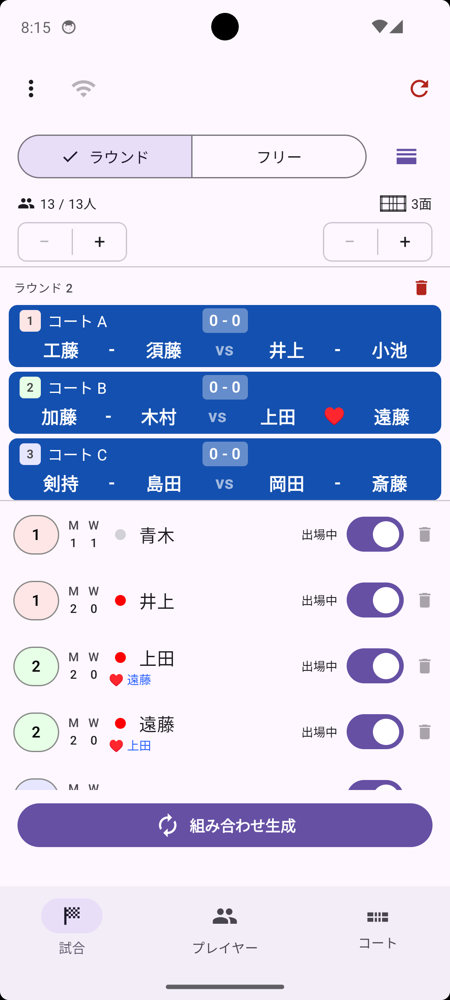
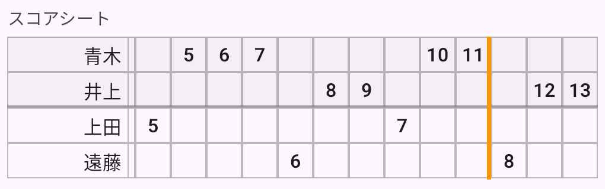

試合タブでは、組み合わせの生成、試合中のスコア記録、他の端末とのセッション共有、結果のメール送信、簡易サーバー機能を利用できます。
初めて起動したときに、画面が上下に分割された「分割表示」になっていることがあります。このページの説明画像の多くは分割表示ではない通常の表示なので、分割表示になっていた場合は画面右上の分割表示ボタンをタップして分割表示をオフにしておきましょう（分割表示について）。
試合タブを開くと、最初は ラウンド モードになっています。組み合わせ生成 をタップするたびに、その時点の参加プレイヤー全員を対象に、全コート分の組み合わせを一括で生成する標準モードです。
プレイヤーは自動的に各コートへ割り振られ、同じ相手との組み合わせが続けて重ならないよう調整されます。1ラウンドが終わったらボタンをタップして次のラウンドを生成する、という流れで進行します。

− / + ボタンで、プレイヤータブ・コートタブを開かなくてもその場で人数・コート数を増減できます（タブレット向けの2ペイン表示では、プレイヤー・コート一覧が常に画面に表示されているため、このボタンはありません）。試合タブで、最後のラウンドの行の右端にあるゴミ箱アイコンをタップすると削除できます（削除できるのは直近のラウンドのみです）。プレイヤーの出場回数なども元の状態に戻ります。
生成された組み合わせが意図どおりでないときは、手で組み替えられます。最後のラウンドの見出し「ラウンド N」の右、ゴミ箱アイコンの左にある入れ替えアイコン（⇄）をタップすると、そのラウンドの全コートと待機中のプレイヤーが1画面に表示されます（フリーモードでは、組み替えられるコートの行の右端にこのアイコンが表示されます。タップしたコートは先頭に、枠付きで表示されます）。


操作は入れ替えたい2人を続けてタップするだけです。
固定ペアの人をタップすると、2人まとめて選ばれます。コート上の人と入れ替えるときは、その人のペア2人と丸ごと入れ替わります。待機中の人と入れ替えるときは、待機中の人をもう1人選んでください（待機中の固定ペアを選ぶこともできます）。
動かした人はオレンジの枠、変更したコートには「変更あり」と表示されます。右上の 適用 をタップすると確定し、左上の × で何も変えずに閉じます（変更があるときは、戻るボタンやジェスチャーでは閉じません）。
試合タブ上部のモードセレクターで フリー を選ぶと、フリーモードに切り替わります。
フリーモードでは、コートごとに試合の終了・再開を個別に管理できます。空いたコートだけに次の組み合わせが生成されるため、試合時間がバラバラでも効率よく進行できます。
組み合わせ生成 で空きコートのみ次の組み合わせが生成されます
試合タブ上部のモードセレクターの右にあるボタンをタップすると、画面が上下に分割され、上段に最新ラウンドの組み合わせ、下段にプレイヤー一覧が表示されます。もう一度タップすると、組み合わせ一覧だけを表示する従来の表示に戻ります。

試合中にレベルや出場・休憩を変更したい場合でも、プレイヤータブへ移動せずにその場で操作できます。下段の一覧では、プレイヤータブと同じように以下の操作が行えます。
上段の行をタップすると、通常どおりスコア入力画面が開きます。アイコンでの操作も通常の表示と同じです。
試合タブ右上の ↻（リセット）アイコンをタップすると、確認アラート「ゲーム情報を削除」が表示されます。削除 を選ぶと、これまでの試合結果がすべて削除されます（プレイヤー自体は削除されません）。
試合タブの試合行をタップすると、スコア入力画面が開きます（通常は縦向きで表示され、端末を横向きにすると2カラムのレイアウトに切り替わります）。画面は上から順に、Game Point（勝利に必要な得点）の設定と 終了 トグル、そのコートで何ゲーム目かを切り替える G1 / G2 / G3 ピッカーとここまでの勝ちゲーム数（A: 0 - 0 :B）、プレイヤー表示、エンド / サーブ ボタン、得点ボタンという構成です。勝ちゲーム数とゲームピッカーのスコアは、常に ペアA:ペアB の順で固定表示され、後述のエンドチェンジを行っても入れ替わりません。
プレイヤー表示には、それぞれ ペアA / ペアB（内部の pairA・pairB に対応）のラベルが付きます。こちらはエンドチェンジで実際の左右位置が入れ替わると、表示も一緒に切り替わります。

青（ペアA）・赤（ペアB）の大きな正方形ボタンに、それぞれの現在の得点が数字で表示されています。このボタンをタップすると、そのペアに1点が加算されます。ボタンは画面左右の位置に固定されており、後述のエンドチェンジでペアが入れ替わると、表示される数字（担当するペア）もそれに合わせて切り替わります。
得点に合わせてサーブ権が自動で切り替わります。いまサーブを打つプレイヤーはオレンジ色で強調され、名前の隣に相手コート側を向いた三角（▶ ／ ◀）が付きます。レシーブする側のプレイヤーはグレーの枠で示されます。サーブ権を持つボタンの真上には「▲ サーブ」の表示が出ます。
中央の ↩（元に戻す）ボタンで直前の得点を1点ずつ取り消せます。
得点ボタンの下には、バドミントンの公式スコアシートと同じ書き方で試合の経過が記録されます。行は上から ペアAの2人・ペアBの2人で固定されており（エンドチェンジをしても入れ替わりません）、1列が1点です。
S、レシーブする人の行に R が入り、続けて両方の行に 0 が入ります列は右へ伸びていき、常に最新の列が見えるよう自動でスクロールします。それまでの経過は横スクロールで確認できます。

画面上部のタブ（G1 / G2 / G3）で第1ゲーム・第2ゲーム・第3ゲームを切り替えます。ここに表示されるスコアも ペアA:ペアB の順で固定表示されます。
画面上部の 終了 トグルをオンにするとそのゲームが終了扱いになり、勝ちゲーム数（A: 0 - 0 :B）に反映されます。勝敗が決まる得点に達すると（下記「Game Point」参照）、このトグルは自動的にオンになります。まだ勝敗が決まっていない場合でも、手動でオンにすることは可能です。
終了 トグルの左側にある Game Point の − / + ボタンで、1ゲームの勝利に必要な得点を変更できます（デフォルト21点、バドミントン公式ルール）。この設定はアプリ全体で共有され、変更すると進行中の他の試合にもすぐに反映されます。
設定した Game Point の値を N とすると、以下のルールで自動的に勝敗が判定され、決まった時点で 終了 トグルが自動的にオンになります。
G1 または G2 が終了すると（終了 トグルがオンになると）、次のゲーム（G2 または G3）のエンドとサーブ権が自動的に設定されます。
ペアA・ペアB表示の間にある ⇆ ボタンをタップすると、左右のペアが入れ替わります（エンドチェンジ）。ペアA / ペアB のラベルや得点ボタンの表示も、実際にどちらの位置にいるかに合わせて自動的に入れ替わります。なおスコアシートは行がペアA・ペアBで固定されているため、エンドチェンジをしても並びは変わりません。
ゲーム開始前（まだ得点が入っていない状態）に限り、「サーブ」表示の隣にある ⇆ ボタンでサービス権チームを入れ替えられます。また、プレイヤー名をタップすると、同ペア内でサーバーとレシーバーを入れ替えられます。
画面右上の ↻ アイコンから、そのゲームのスコアをリセットできます。
試合タブ左上の「⋮」から、以下の機能を利用できます。
前半は複数レベルを一緒に回してから、後半はコートごとにレベル分けして各コートで個別に進行したい場合、前半の組み合わせ情報を維持したまま他の端末にセッションを共有し、後半はコートごとに別々の端末で進行を分担できます。また、複数の運営者がそれぞれ別々にプレイヤーを登録した状態で合流したい場合にも、現在のプレイヤーリストと組み合わせ結果を共有できます。
試合タブ左上の「⋮」→ 結果をメールする をタップすると、メール送信可能なアプリの選択画面が開き、これまでの組み合わせとスコアがあらかじめ本文に入力された状態で送信できます。
pairgen-日付.html）結果サマリーには、ラウンド（M1・M2…）ごとに各コートの組み合わせと勝ちゲーム数が入ります。
A(sAlice, Bob) 2 - 1 B(rCarol, Dave) のように表示されます。数字は勝ちゲーム数で、常に ペアA - ペアB の順です（まだ決着していない試合や引き分けも 0 - 0 / 1 - 1 と表示されます）s は第1ゲームの最初のサーバー、r は最初のレシーバーを表します添付のスコアシートをタップして開くと、終了したゲームがスコア入力画面と同じ書き方の表で並びます。見出しは M1 Court A G1 (21 : 18) の形式で、結果サマリーと対応します。1ゲームぶんが折り返さずに横一列に並ぶので、長いゲームは横にスクロールしてご覧ください。勝ちゲーム数が 0 - 0 の試合（1ゲームも終了していない試合）は省略されます。
結果をコピー をタップすると、スコアシートも含めた全文がテキスト形式でクリップボードにコピーされるので、お使いのアプリに貼り付けて送れます。くみあぷを入れた端末（マスター）でサーバーを起動すると、同じ Wi-Fi に接続した他の携帯・タブレットの Web ブラウザから、現在の組み合わせやプレイヤー一覧を見たり、一部の操作を行ったりできます。大会運営スタッフなど、複数人でコート状況を共有したい場合に便利です。普段のゲーム練などでもマスターの端末以外の複数端末から OS に関係なく現在の状況や進行を操作することが可能です。またゲーム練の途中からフリーモードに切り替えてコートごとにレベルを割り振って個別に進行を操作することも可能です。
試合 タブ左上の Wi-Fi アイコン（または「⋮」メニューの「サーバーを起動」）をタップします。案内画面が表示されるので、内容を確認して「開始」をタップすると起動します。

接続する端末を、マスター端末と同じ Wi-Fi に接続してください。サーバー起動中に Wi-Fi アイコンをタップすると、接続用の URL と QR コードが表示されます。QR コードを読み取るか、URL を直接ブラウザで開いてください。

再度 Wi-Fi アイコンをタップすると、稼働状況の確認画面が開きます。「サーバーを停止」をタップすると停止します。